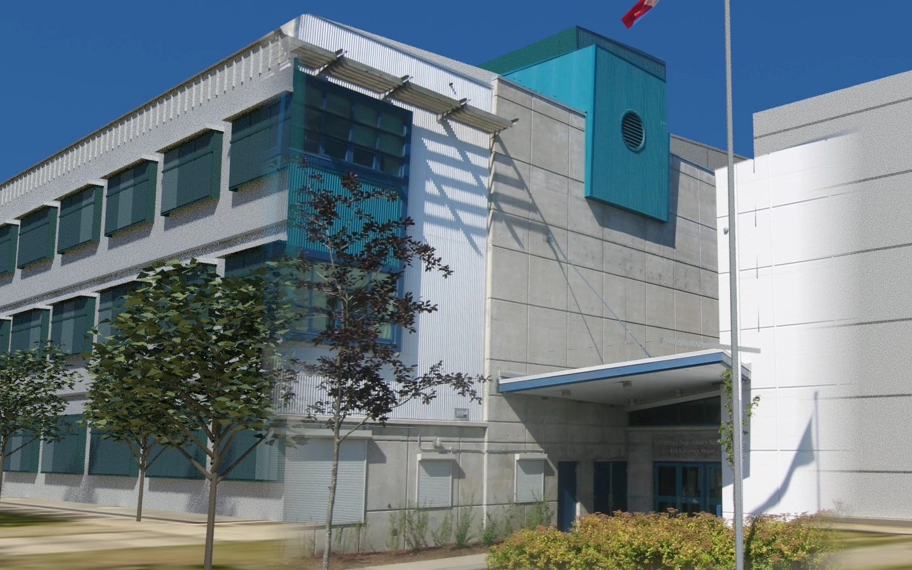
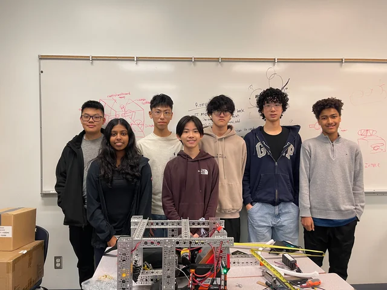
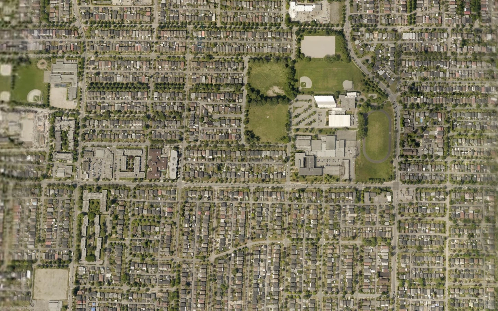
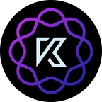
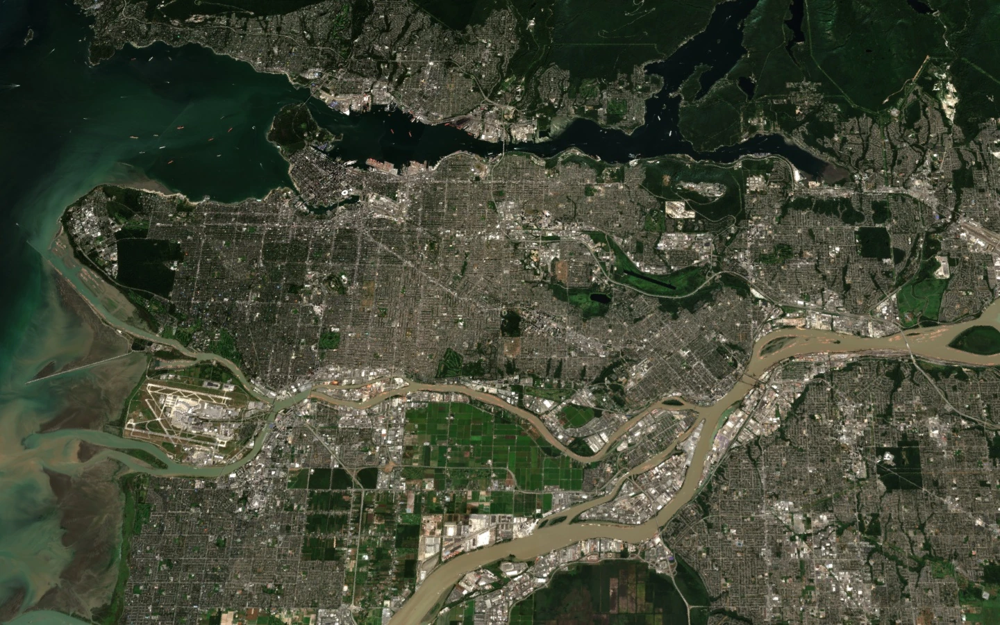
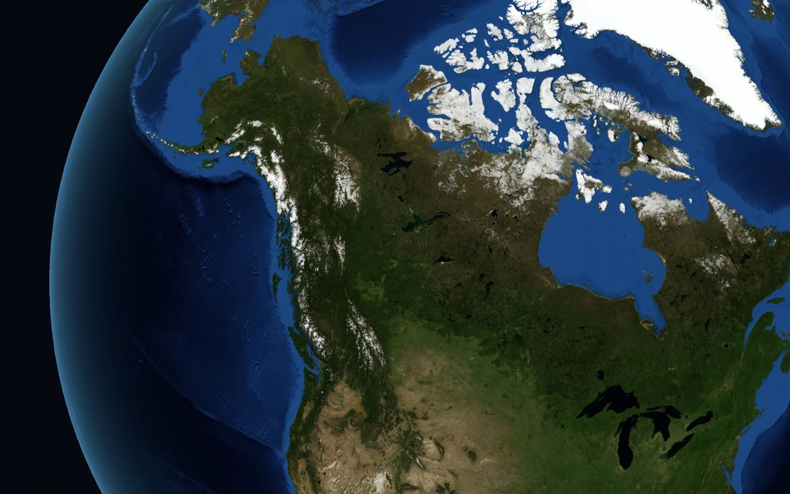
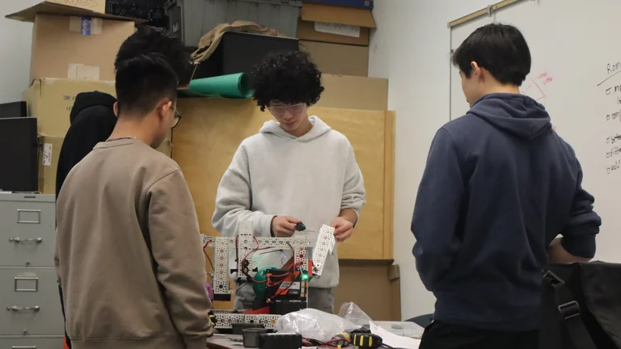

Killarney Secondary School
Outreach
We’re BotSquared, FTC Team 22829. Our robotics community starts here in Vancouver.

Meet the team
Killarney Secondary School
We’re BotSquared, FTC Team 22829. Our robotics community starts here in Vancouver.

Meet the team
Our school community
Two FTC teams call Killarney home. Our sister team, KNOTbot #22817, builds and competes alongside us.

Visit KNOTbot
Metro Vancouver

Across Canada
We represent FTC News Canada, sharing stories from the Canadian FIRST Tech Challenge community.
Follow FTC News CanadaAround the world
Planning a STEM event or looking for another team to build with? We’d love to hear from you.
Get in touchContains information licensed under the Open Government Licence – Vancouver (2022 aerial photography and 2009 building footprints). The opening view uses entrance photography by Arnold C, projected onto a reconstruction of the entrance pictured on Killarney Secondary’s website. Contains modified Copernicus Sentinel data (2024). Regional imagery courtesy of NASA GIBS / MODIS Terra. Globe imagery by NASA Earth Observatory.

From decoding ciphers to exploring robotics, we give younger students a chance to try STEM for themselves. We also work with partners like Girls 4 Tech to share hands-on STEM activities.

We share ideas with other robotics teams through peer mentorship and our work with FTC News Canada.

Fundraisers like our Krispy Kreme sale help us pay for robot parts, tools, and competitions.
During the DECODE season, FIRST recognized our work introducing younger students to STEM and supporting other FTC teams.

Have a STEM event or a team project in mind? Tell us about it.